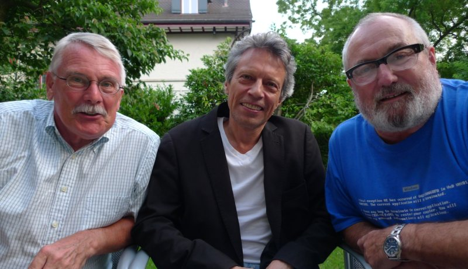

Liebe Freunde des guten Buches,
neben unseren Reisebüchern, die in der Reihe “kommedia.edizioni” erscheinen, werden wir uns ab Herbst 2011 auch auf das Gebiet der Belletristik wagen. In der Reihe “Die Lunte” werden wir in loser Folge schräge – schlimmer noch! “üble” Literatur auf den Markt bringen.
Die beiden ersten “üblen Bücher” stammen von zwei Autoren aus der Schweiz: Clemens Klopfenstein und Marcus P. Nester — ein Autorenduo, das sich schon bei anderen Buch-und Filmprojekten bewährt hat und mit dem gemeinsam verfassten Buch “Die Migros-Erpressung” (zytglogge/rororo-thriller) grosses Aufsehen erregte. Walter Vogt schrieb damals in der NZZ: “Die Schweiz hat einen neuen Kriminalroman!” Nach einer Auflage von 50 000 Exemplaren wurde das Buch jedoch plötzlich vom Markt genommen, und die im Titel genannte Supermarktkette verbot jegliche weitere Auslieferung. Später arbeiteten die beiden Autoren zusammen am Schweizer-Tatort “Alp-Traum”, an dem unter anderen Stefan Kurt, Delia Meyer und Caroline Redl mitwirkten. „Alp-Traum“ erzielte eine der höchsten Einschaltquoten in der Schweiz.
Diesmal kommen die beiden Autoren einzeln daher, doch man spürt ihren Zusammenhang, so dass wir die beiden Romane gleichzeitig zu veröffentlichen.
“Vergiss Venedig” von Marcus P. Nester und “Schwein gehabt” von Clemens Klopfenstein scheinen auf den ersten Blick wieder Kriminalromane zu sein: der eine bewegt sich vom Zürcher Fernsehen ans Festival von Venedig und endet unglücklich (glücklich?) tödlich. Der andere spielt im dunklen Umbrien und endet in der Ekstase.
Doch immer wieder schweift die Handlung der beiden Romane vom reinen Krimiplot ab, der Text entgleitet, rutscht richtiggehend aus, wird schräg und kann manchmal sogar übel abstürzen. Üble Romane halt – doch urteilen Sie selbst!
Wir freuen uns, wenn Sie auf die beiden Bücher neugierig geworden sind. Bitte kaufen Sie gleich beide im Doppelpack, denn sonst gibt’s bei uns im Hause nur Neid und Missgunst.
Herzlich
Ihre Margarete Berg.
Köln, im Mai 2011.
Kontakt und Vorbestellungen.
3ÜBLEBÜCHER
Martin Hennig
Marcus P. Nester
Clemens Klopfenstein

Das Lunte Team: Nester, Hennig, Klopfenstein — Photo: Serena Kiefer.
{kind=link}
Hennig, Nester und Klopfenstein lesen aus 3 üblen Büchern
am 18. Mai im Kreuzsaal ab 22 Uhr (Nocturne).
Moderation: Rafael Urweider.
Weitere Lesungen im Dunkelzelt und in der Altstadt.
Am Montag 21. Mai, Lesung in Zürich:
Buchhandlung Hirslanden ab 20 Uhr.
Moderation: Peter Zeindler.
Am Dienstag 22. Mai, Lesung in Basel:
Buchhandlung Bachletten ab 19 Uhr 30
bei Matthyas Jenny.

Im Der Landbote und Die Zürichsee-Zeitung.